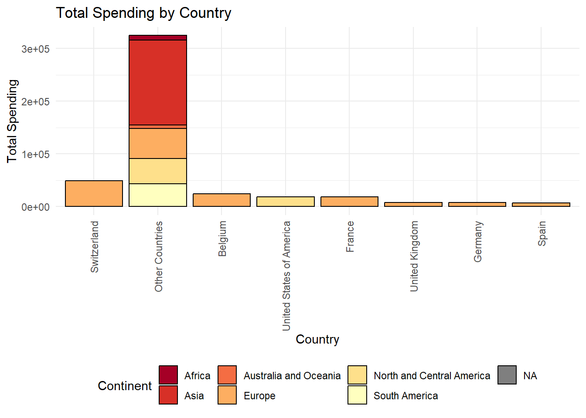
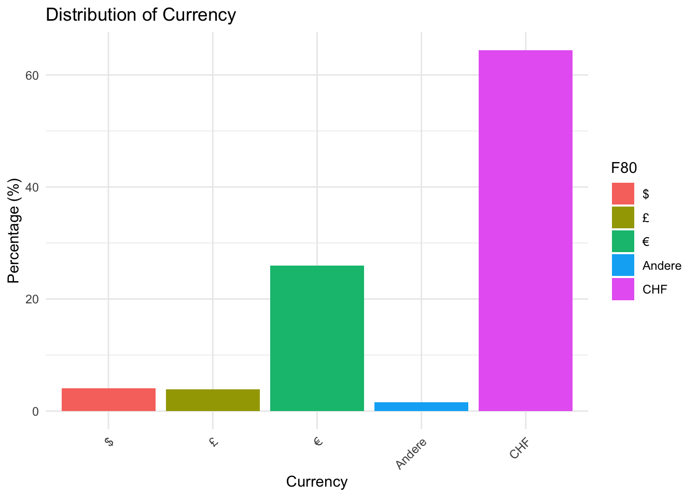

Global percentage of people coming in the canton of Vaud per continent
With the data gathered from the survey, we have first explored the overall distribution of nationalities of the visitors. Therefore, you will find here a table and a graph providing the frequency per nationality and the percentage of nationality it represents.
Code
### F05_01.ENG ####nb of occurrences by country and continents OccurencesCountry <- data %>%group_by(data$F05_02_ENG) %>%count(sort =TRUE)OccurencesContinent <- data %>%group_by(data$F05_01_ENG) %>%count(sort =TRUE)#Continent in percentagesF05_01_PCT <- data %>%group_by(F05_01_ENG) %>%summarise(Count =n()) %>%mutate(Percentage = Count /sum(Count) *100) %>%arrange(desc(Percentage)) %>%mutate(Percentages =round(Percentage, 2)) %>%select(-c(Percentage)) %>%rename(Continent_of_origin = F05_01_ENG)datatable(F05_01_PCT, options =list(pageLength =10,class ="hover",searchHighlight =TRUE), rownames =FALSE)
Code
#plot numbers continent ggplot(F05_01_PCT, aes(x=reorder(Continent_of_origin, Percentages), y=Percentages, fill=Continent_of_origin)) +geom_bar(stat="identity") +coord_flip() +# Flip coordinates for horizontal barstheme_minimal() +labs(x="Continents of origin", y="Percentages", title="Percentages of Each Unique Continent of origin") +theme(legend.title =element_blank(), # Remove the legend titlelegend.position ="none", # Hide the legend as the colors are not necessary with labelsplot.title =element_text(hjust =0.5), # Center the plot titleaxis.text.x =element_text(angle =45, hjust =1)) +geom_text(aes(label=sprintf("%.2f%%", Percentages)), position=position_dodge(width=-0.5), vjust=-0.01, hjust=-0.1, size =3) +# Add percentage labelsylim(0, 90) # Extend y-axis range
We notice that a large part of the people surveyed were coming from Europe (approx. 78%), followed by people coming from Asia (approx. 8%), North and Central America (approx. 8%), South America (approx. 3%) Australia and Oceania (approx. 2%) and finally Africa (approx. 1%). Again, these results were concerning the whole canton.
Global percentage of people coming in canton of Vaud per country of origin
We have then decided to explore the distribution, in frequency and percentage, of the nationalities per continent. You will find here again a table and a graph, summarizing this information:
Code
# Countries in percentages F05_02_PCT <- data %>%group_by(F05_02_ENG) %>%summarise(Count =n()) %>%mutate(Percentage =round((Count /sum(Count) *100),2)) %>%arrange(desc(Percentage)) %>%rename(Country_of_origin = F05_02_ENG)datatable(F05_02_PCT, options =list(pageLength =10,class ="hover",searchHighlight =TRUE), rownames =FALSE)
Code
### F05_02_ENG ####plot with continents F05_02_PCT <- data %>%group_by(F05_02_ENG, F05_01_ENG) %>%# Group by both country and continentsummarise(Count =n(), .groups ='drop') %>%mutate(Percentage =round((Count /sum(Count) *100),2)) %>%arrange(desc(Percentage)) #concatenate all countries except " 7 best " F05_02_PCT <- F05_02_PCT %>%add_row(F05_01_ENG ="Other Continents", F05_02_ENG ="Other Countries", Count =sum(F05_02_PCT$Count[7:104]), Percentage =sum(F05_02_PCT$Percentage[7:104]))#get rid of the rest of the rowsF05_02_PCT <- F05_02_PCT[-(8:104),]#plotggplot(F05_02_PCT, aes(x =reorder(`F05_02_ENG`, Percentage), y = Percentage, fill =`F05_01_ENG`)) +geom_bar(stat ="identity") +coord_flip() +# Make the plot horizontalscale_fill_brewer(palette ="Set3", name ="Continent") +# Use a color palette for continentstheme_minimal() +labs(x ="Country of Origin", y ="Percentages", title ="Percentage of Responses by Country and Continent of origin") +theme(axis.text.x =element_text(angle =45, hjust =1, size =9), axis.text.y =element_text(angle =45, hjust =1, size =9),plot.title =element_text(hjust =0.5),legend.position ="right") +# Adjust legend positiongeom_text(aes(label=sprintf("%.2f%%", Percentage)), position=position_stack(vjust=0.5))
For visibility purpose, we have decided to represent here in the graph the top 7 countries of the table, representing all above 3% of the nationalities found in the survey. We have then decided to group the remaining countries in the category “Other Countries”.
We notice that Switzerland is the nationality the most represented among all the visitor (approx. 31.5%). Therefore, there are a lot of Swiss citizens travelling in their own country for various purpose to the canton of Vaud. Also, we see again that the most represented nationalities are Europeans, such as France (approx. 14.5%), United Kingdom (appox. 7.5%), Germany (approx. 5.5%), Belgium (approx. 3.5%) and finally Spain (approx. 3%). The only other nationality coming from a other continent represented here is the United States of America (approx. 5.5%). Proximity could be for instance one of the main factor explaining these results.
Per city, the percentage of each visitor’s country of origin, relative to the number of visitor of the city
Then, In order to know more about the precise destination of the visitors, we have decided to gather by city the percentage of country of origin.
Code
# Counting the number of tourists by city and nationalitytourists_by_nationality <- data %>%group_by(F105_Code, F05_02_ENG) %>%summarise(Count =n(), .groups ='drop')# Calculating the total number of tourists per citytotal_tourists_per_city <- tourists_by_nationality %>%group_by(F105_Code) %>%summarise(TotalCount =sum(Count), .groups ='drop')# Joining the counts back to the detailed breakdown and calculating the rationationality_ratio_per_city <- tourists_by_nationality %>%left_join(total_tourists_per_city, by ="F105_Code") %>%mutate(Ratio =round((Count / TotalCount),3)) %>%select(F105_Code, F05_02_ENG, Ratio) %>%rename(City = F105_Code, Country_of_origin = F05_02_ENG)datatable(nationality_ratio_per_city, options =list(pageLength =10,class ="hover",searchHighlight =TRUE), rownames =FALSE)
The percentage here was in fact a ratio representing the number of people from one particular nationality over the total number of visitors in each city. Unfortunately, as very few data has been collected in some cities, the ratio of visitor from one nationality over all the visitor surveyed can be really large (up to 1, in point of percentage). On the other hand, as data from some other city gathered a lot of answers, we observe that some country of origin (e.g. Austria in Lausanne) were only accounting for 0.2% of the total visitors.
Ratio of each country of origin relatively to the number of tourist surveyed in each district
In the same process, let’s now explore the country of origin ratio per district of tourism.
Code
#ratio of each nationality relatively to the number of tourist surveyed in each district F105_OrgCodetourists_by_nationality <- data %>%group_by(F105_OrgCode, F05_02_ENG) %>%summarise(Count =n(), .groups ='drop')# Calculating the total number of tourists per citytotal_tourists_per_city <- tourists_by_nationality %>%group_by(F105_OrgCode) %>%summarise(TotalCount =sum(Count), .groups ='drop')# Joining the counts back to the detailed breakdown and calculating the rationationality_ratio_per_city <- tourists_by_nationality %>%left_join(total_tourists_per_city, by ="F105_OrgCode") %>%mutate(Ratio =round((Count / TotalCount),3)) %>%select(F105_OrgCode, F05_02_ENG, Ratio) %>%rename(District_tourism = F105_OrgCode,Country_of_origin = F05_02_ENG)datatable(nationality_ratio_per_city, options =list(pageLength =10,class ="hover",searchHighlight =TRUE), rownames =FALSE)
Again, the low number of data available in our data don’t allow us to get really satisfying results for every city surveyed.
As Swiss citizens accounted for more than 30% of the visitors surveyed, we have decided to know more about the percentages of people coming from Switzerland, visiting Switzerland. Therefore, here is the distribution of visitors per canton of origin.
Code
## Séparation cantons suisse-allemands# Swiss german column# unique(data[data$F05_02 == "Schweiz", ]$F05_03)# Seratation german cantons (subjective) swiss_german_cantons =c("Luzern", "Schwyz", "Bern", "Neuenburg", "Aargau","Zürich", "Basel-Stadt", "Basel-Landschaft", "Obwalden","Appenzell Innerrhoden", "Schaffhausen", "Thurgau","St. Gallen", "Solothurn", "Uri", "Zug", "Nidwalden","Appenzell Ausserrhoden")# Binary column for swiss germans data$swiss_german <-ifelse(data$F05_02 =="Schweiz"& data$F05_03 %in% swiss_german_cantons, 1, 0)# count ratio from each german canton over the data Inside_Switzerland <- data %>%select(F05_02_ENG, F05_03, swiss_german) %>%filter(F05_02_ENG =="Switzerland") %>%group_by(F05_03) %>%summarise(Count =n()) %>%mutate(Percentage =round((Count/sum(Count)) *100, 1)) %>%#round(Percentage, 2) %>%rename(Canton = F05_03)datatable(Inside_Switzerland, options =list(pageLength =10,class ="hover",searchHighlight =TRUE), rownames =FALSE)
Code
#plot numbers continent ggplot(Inside_Switzerland, aes(x=reorder(Canton, Percentage), y=Percentage, fill=Canton)) +geom_bar(stat="identity", width =0.8) +coord_flip() +# Flip coordinates for horizontal barstheme_minimal() +labs(x="Cantons", y="Percentage", title="Distribution among swiss visitors") +theme(legend.title =element_blank(), # Remove the legend titlelegend.position ="none", # Hide the legend as the colors are not necessary with labelsplot.title =element_text(hjust =0.5), # Center the plot titleaxis.text.x =element_text(angle =45, hjust =1)) +geom_text(aes(label=sprintf("%.2f%%", Percentage)), position=position_dodge(width=-0.5), vjust=0.3, hjust=-0.1, size =3) +# Add percentage labelsylim(0, 22) # Extend y-axis range
Warning: `position_dodge()` requires non-overlapping x intervals.
As we can see on this table, the biggest part of the Swiss visitors surveyed in this study are people from Vaud (approx. 20%), Bern (approx. 16%) and Zurich (approx. 12%).
Now among the swiss german cantons, let’s explore the distribution of the canton
Code
# Now how much percentage do swiss germans represent in thisSwiss_germans_percentage <- Inside_Switzerland %>%filter(Canton %in% swiss_german_cantons) %>%mutate(Percentage =round((Count/sum(Count)) *100, 1))# sum(Swiss_germans_percentage$Percentage)datatable(Swiss_germans_percentage, options =list(pageLength =10,class ="hover",searchHighlight =TRUE), rownames =FALSE)
Code
# Calculate counts for Swiss-German cantons and othersswiss_canton_summary <- data %>%group_by(swiss_german) %>%summarise(Count =n()) %>%mutate(Total =sum(Count),Percentage = (Count / Total) *100) %>%ungroup() %>%mutate(Type =ifelse(swiss_german ==1, "Swiss German Cantons", "Other Cantons")) %>%select(Type, Count, Percentage)
Bern, Zurich and Aargau are the top 3 cantons represented among all swiss german cantons (with in approx. 26.5%, 19.5% and 10.5% in the order)
Now, for interpretability and visualisation, let’s see the proportion of swiss german people over the rest of the swiss citizens surveyed:
Code
# Plotggplot(swiss_canton_summary, aes(x = Type, y = Percentage, fill = Type)) +geom_bar(stat ="identity") +theme_minimal() +theme() +geom_text(aes(label=sprintf("%.2f%%", Percentage)), position=position_stack(vjust=0.5)) +labs(title ="Percentage of Swiss German Cantons vs Other Cantons",x ="Canton Type",y ="Percentage") +ylim(0, 90) # Extend y-axis range

Over all the swiss citizen, we can see that approx. 20% of them are coming from the swiss german part.
Analysis
Plot of the total number of days spent in Vaud per month of the year
Now let’s explore the number of day spend per month of the year in the canton of Vaud
Code
### F12 & F13 ####Are we more interested in knowing when they came for holidays or how long?#duration per month data <- data %>%mutate(# Convert to date format firstdate_column =dmy(F12),# If you want the month names insteadmonth_name_column =month(date_column, label =TRUE, abbr =FALSE) # Set abbr=FALSE for full month names )#orderdesired_order <-c("Serial2","F05_01","F05_01_ENG","F05_02","F05_02_ENG","F05_03","F05_04","F12","F13","month_name_column","hFerienDauer")remaining_columns <-setdiff(names(data), desired_order)new_order <-c(desired_order, remaining_columns)data <- data[, new_order]# nb of days per month nb_days_per_month <- data %>%select(F12, F13, month_name_column, hFerienDauer) %>%group_by(month_name_column) %>%summarize(total_hFerienDauer =sum(hFerienDauer, na.rm =TRUE))nb_days_per_month <- nb_days_per_month %>%mutate(season =case_when( month_name_column %in%c("December", "January", "February") ~"Winter", month_name_column %in%c("March", "April", "May") ~"Spring", month_name_column %in%c("June", "July", "August") ~"Summer", month_name_column %in%c("September", "October", "November") ~"Fall",TRUE~NA_character_# for any month names not matched or NA values ))#plotggplot(nb_days_per_month, aes(x = month_name_column, y = total_hFerienDauer, fill = season)) +geom_bar(stat ="identity") +geom_smooth(aes(group =1), method ="loess", se =FALSE, color ="red", linetype ="dashed") +scale_fill_manual(values =c("Winter"="blue", "Spring"="green", "Summer"="purple", "Fall"="orange")) +theme_minimal() +labs(x ="Months", y ="Sum Holiday Durations", title ="Total Holiday Duration by Month", fill ="Season") +theme(axis.text.x =element_text(angle =45, hjust =1))
We clearly see two major moment of the year were there is a rise in the number of days spent in Vaud: March and July.
Now let’s explore the percentage of trip category per continent. In the survey, the visitors were asked the type of trip they were having. Therefore, you will find here the graph of the distribution of the type of trip for each continent. The choice was made among 4 possibilities that are explained in the legend of the graph.
Code
ggplot(trip_percentages, aes(x = F05_01_ENG, y = Percentages, fill = F16_ENG)) +geom_bar(stat ="identity") +labs(x ="Country", y ="Percentages", fill ="Type of Trip") +ggtitle("Stacked Bar Plot of Type of Trip by Country") +scale_fill_manual(values = my_colors) +# Use your defined colors heregeom_text(aes(label = Percentages), position =position_stack(vjust =0.5), size =5) +theme_minimal() +theme(axis.text.x =element_text(angle =45, hjust =1, size =10),axis.text.y =element_text(hjust =1, size =10),legend.text =element_text(size =9),legend.title =element_text(size =0),#legend.box = "vertical",legend.position ="bottom",legend.key.size =unit(0.4, "cm")) +guides(fill =guide_legend(nrow =2, title ="Options"))
In general, we notice that most of the visitors coming from continent far away from Switzerland are coming in Switzerland for serveral nightstays during their trip in Europe. On another hand, living closer, are staying most of the time for one overnight stay in Switzerland. This is probably due to the large quantity of visitors surveyed coming from Switzerland but from other cantons or visitors coming from adjacent countries such as Germany in France, all these visitors accounting for a total of approx. 50% of the people surveyed.
Global frenquency of nightstays in Switzerland
Here are the distribution of the frequencies of the number of night spent during a trip in Switzerland.
Code
### F20 #### Careful here: some people have 0 nightstay and only passed by switzerland for a day. # but answered the question 16, asking about the number of nights.# also when f16 answered and F20 blanc ---> change NAs by 1 data_NAs <- data %>%mutate(F20 =ifelse(is.na(F20), 1, F20))F20_freq <- data_NAs %>%group_by(F20) %>%summarize(Count =n(), .groups ='drop') %>%arrange(desc(Count)) # Optional: arrange in descending order of frequencyggplot(F20_freq, aes(x = F20, y = Count, fill = F20)) +geom_bar(stat ="identity") +theme_minimal() +labs(x ="Number of nights", y ="Frequency", title ="Frequency of the number of nights in Vaud") +theme(axis.text.x =element_text(angle =45, hjust =1), # Improve readability of x-axis labelslegend.title =element_blank()) # Hide the legend if not needed
As the question asked to the visitor was the number of night spent in Switzerland, it is difficult to know how many nights were spent in the Canton of Vaud. Therefore, we have decided here to take into account in our analysis the global number of night in the country. In addition, as most of our data contained NAs because of the structure of the survey (according to the answer of the question F16, some people could not answer question F20, therefore their answer was reported as a NA). Thus, we have decided to count the NAs as 1 overnight stay, as it is not possible to know if they only stayed in Vaud for 1 day without staying overnight.
We can therefore see that most of the visitors only spend in general 1 night in the canton, and few people in comparison are staying more than a week.
Now let’s explore the percentage of the number of days spent in Switzerland over the whole visitors’ trip.
Code
### F21 ####consider NA as 0 here. # if F20 and F21 not NAs --> take percentage of nightstays in Switzerland compared to the total length of the trip# Add a new column with the percentage of night stays in Switzerland over the total trip night staysdata2 <- data %>%mutate(Percentage_Night_Stays_Switzerland =ifelse(is.na(F20) |is.na(F21), NA, (F20 / F21) *100))ratio_nightstays_CH_EU <- data2 %>%select(F20,F21, Percentage_Night_Stays_Switzerland) %>%group_by() %>%drop_na()# Create the distribution histogramggplot(ratio_nightstays_CH_EU, aes(x = Percentage_Night_Stays_Switzerland)) +geom_histogram(binwidth =10, fill ="skyblue", color ="black") +labs(title ="Distribution of the percentage of nightstays in Vaud over the whole trip",x ="Percentage Night Stays",y ="Frequency" ) +theme_minimal()
As this graph shows, we notice that over the whole trip, most of the people will stay around 20% of their trip in Switzerland.
Code
### F30 ###F30_Q <- data %>%count(F30_ENG, name ="Total")F30_Q$percentage <-with(F30_Q, Total /sum(Total) *100)ggplot(F30_Q, aes(x = F30_ENG, y = Total, label =paste(percentage, "%"))) +geom_bar(stat ="identity", fill ="skyblue") +geom_text(vjust =-0.5, color ="black") +theme_minimal() +labs(title ="Q30: Have you booked a package tour?",x ="Answers",y ="Total")
Now let’s explore the distribution of the arrivals per nationality over the year:
Code
### Deeper reasoning #### Where are coming from the people, per month# Summarize data: count arrivals per month and countrymonthly_arrivals <- data %>%group_by(month_name_column, F05_02_ENG) %>%summarise(Count =n(), .groups ='drop') %>%arrange(month_name_column, F05_02_ENG) # This will ensure the data is ordered, which might help in visualization# total per countryper_country <- monthly_arrivals %>%select(F05_02_ENG, Count) %>%group_by(F05_02_ENG) %>%mutate(total =sum(Count)) %>%select(-c(Count))#left join result <-left_join(monthly_arrivals, per_country, by ="F05_02_ENG") %>%distinct()# Visualizeggplot(result, aes(x = month_name_column, y =`F05_02_ENG`, size =log(Count/total))) +geom_point(alpha =0.7) +# Using alpha for better visibility if points overlapscale_size_continuous(range =c(0.1, 10)) +# Adjust range as neededtheme_minimal() +labs(title ="Monthly Arrivals in Switzerland by Country of Origin",x ="Month",y ="Country of Origin",size ="Number of Arrivals") +theme(axis.text.x =element_text(angle =45, hjust =1))
On this graph, we notice that the size of the dots, representing the monthly number of arrivals of a nationality over the total number of arrival of this particular nationality, yearly, are variating a lot according to the nationality. Unfortunately, due to the low number of data surveyed, some countries are only represented once over the whole year.
Partie Lodrik
Where did they stay? (For example: yes, they went to Montreux, but what type of accommodation, what price?
Most popular destinations in the canton Vaud
Let’s now dive into the subject of the location of their stay. First, let’s have a look at the most popular locations in the canton Vaud. Given the architecture of the study this gives us the city where most people answer the survey.
From this plot, we can see that the most pupular city in the canton of Vaud is Lausanne. Let’s now have a look at the type of accommodation where the visitor stayed in the canton of Vaud. We took the liberty to remove the 46 observation where the type of accommodation was not specified. We can now concentrate more our attention on the district where the people stayed.
As we can see, out of the 67 city surveyed in the 10 district, the most popular district is Lausanne. This is not really suprising because of the way the data was collected. More people were surveyed in these city/districts than other smaller one. It is still interesting to have a look to keep this in mind.
Type of Accommodation
As we can see, the most popular type of accommodation in the canton of Vaud is Hotel/SPA House. It is interesting to note the proportion of people staying in Campsite. We can see below on the word cloud the most popular other type of accommodation.
Hotels Stars
Now, let’s have a look at the hotel standing of the places where the people stayed. This will highlight the quality of the stay per district.
Average Stars per District
As we can see on the graph above, the best average is optain in Ouest lausannois with an average of 4 stars. But this statistics is not very representative to the reality. Only 13 people answered the survey in this district which is not enough to have a good idea of the quality of the hotels in this district. The second best region after Ouest lausannois is Riviera-Pays-d’Enhaut with an average of 3.66 stars. This district got with 623 observation which is more representative. This high score for the Region of Riviera-Pays-d’Enhaut is not really surprising given the fact that this place is well know for its luxury hotels.
Partie Jeff - Expenses and where they come from, when, where and for which sector?
spending_data <-data.frame(Spending_Type =c("Overnight stay", "Transports", "Food & Drink", "Souvenirs", "Other shopping", "Other expenses"),Amount =c(mean(data$F81_01, na.rm =TRUE), mean(data$F81_02, na.rm =TRUE),mean(data$F81_03, na.rm =TRUE),mean(data$F81_04, na.rm =TRUE),mean(data$F81_05, na.rm =TRUE),mean(data$F81_06, na.rm =TRUE)))ggplot(spending_data, aes(x = Spending_Type, y = Amount, fill = Spending_Type)) +geom_bar(stat ="identity", color ="black") +labs(title ="Average Spending by Category (no package tour)", x ="Category", y ="Average Amount") +theme_minimal() +theme(axis.text.x =element_text(angle =45, hjust =1)) # Rotate x-axis labels for readability
Code
spending_data_package <-data.frame(Spending_Type =c("Package", "Overnight stay", "Transports", "Food & Drink", "Souvenirs", "Other shopping", "Other expenses"),Amount =c(mean(data$F82_01, na.rm =TRUE), mean(data$F82_02, na.rm =TRUE),mean(data$F82_03, na.rm =TRUE),mean(data$F82_04, na.rm =TRUE),mean(data$F82_05, na.rm =TRUE),mean(data$F82_06, na.rm =TRUE),mean(data$F82_07, na.rm =TRUE)))ggplot(spending_data_package, aes(x = Spending_Type, y = Amount, fill = Spending_Type)) +geom_bar(stat ="identity", color ="black") +labs(title ="Average Spending by Category", x ="Category", y ="Average Amount") +theme_minimal() +theme(axis.text.x =element_text(angle =45, hjust =1))
Percentage of people with package & without package
Code
# Calculate the number of non-NA entries for each type of spendingspending_counts <- data %>%summarize(Package =sum(!is.na(F82_Total)),WithoutPackage =sum(!is.na(F81_Total)) ) %>%gather(key ="PackageType", value ="Count")# Calculate percentagestotal_records <-sum(spending_counts$Count)spending_counts <- spending_counts %>%mutate(Percentage = (Count / total_records) *100)# Plot the percentages with the percentage shown on the barsggplot(spending_counts, aes(x = PackageType, y = Percentage, fill = PackageType)) +geom_bar(stat ="identity") +geom_text(aes(label =sprintf("%.1f%%", Percentage)), # Format the labels to one decimal placeposition =position_stack(vjust =0.5), # Adjust text to be inside the barscolor ="white") +labs(title ="Percentage of Observations With and Without Package",x ="Type of Spending",y ="Percentage (%)") +scale_fill_brewer(palette ="Pastel1") +# Aesthetically pleasing color palettetheme_minimal() +theme(axis.text.x =element_text(angle =45, hjust =1))
# Aggregate total spending for F81_Total and include continentstotal_spending_F81 <- data %>%group_by(F05_02_ENG, F05_01_ENG) %>%summarize(Total_Spending_F81 =sum(F81_Total, na.rm =TRUE)) %>%arrange(desc(Total_Spending_F81))# Plot for F81_Total with continent colorsggplot(total_spending_F81, aes(x =reorder(F05_02_ENG, -Total_Spending_F81), y = Total_Spending_F81, fill = F05_01_ENG)) +geom_bar(stat ="identity") +labs(title ="Total Spending by Country for F81_Total", x ="Country", y ="Total Spending") +scale_fill_brewer(palette ="Set3", name ="Continent") +# Color based on continenttheme_minimal() +theme(axis.text.x =element_text(angle =90, vjust =0.5, hjust=1),legend.position ="bottom") # Position the legend at the bottom
Code
# Aggregate total spending for F82_Total and include continentstotal_spending_F82 <- data %>%group_by(F05_02_ENG, F05_01_ENG) %>%summarize(Total_Spending_F82 =sum(F82_Total, na.rm =TRUE)) %>%arrange(desc(Total_Spending_F82))# Plot for F82_Total with continent colorsggplot(total_spending_F82, aes(x =reorder(F05_02_ENG, -Total_Spending_F82), y = Total_Spending_F82, fill = F05_01_ENG)) +geom_bar(stat ="identity") +labs(title ="Total Spending by Country for F82_Total", x ="Country", y ="Total Spending") +scale_fill_brewer(palette ="Set3", name ="Continent") +# Color based on continenttheme_minimal() +theme(axis.text.x =element_text(angle =90, vjust =0.5, hjust=1),legend.position ="bottom") # Position the legend at the bottom
Code
# Reshape data from wide to long formatdata_long <- data %>%pivot_longer(cols = F81_01:F81_06,names_to ="Spending_Category",values_to ="Amount" )# Calculate the average spending for each country and each categoryaverage_spending <- data_long %>%group_by(F05_02_ENG, F05_01_ENG) %>%summarize(Average_Spending =mean(Amount, na.rm =TRUE)) %>%ungroup() %>%arrange(desc(Average_Spending))# Optional: Aggregate to country level without distinguishing by categoryaverage_spending_by_country <- average_spending %>%group_by(F05_02_ENG, F05_01_ENG) %>%summarize(Average_Spending =mean(Average_Spending, na.rm =TRUE)) %>%arrange(desc(Average_Spending))# Plot the average spending by country in descending orderggplot(average_spending_by_country, aes(x =reorder(F05_02_ENG, -Average_Spending), y = Average_Spending, fill = F05_01_ENG)) +geom_bar(stat ="identity") +labs(title ="Average Spending by Country", x ="Country", y ="Average Spending") +scale_fill_brewer(palette ="Set3", name ="Continent") +# Color based on continenttheme_minimal() +theme(axis.text.x =element_text(angle =90, vjust =0.5, hjust=1),legend.position ="bottom") # Position the legend at the bottom
Code
# Reshape data from wide to long format for package spending variablesdata_long_package <- data %>%pivot_longer(cols = F82_01:F82_07,names_to ="Spending_Category",values_to ="Amount" )# Calculate the average spending for each country and each categoryaverage_spending_package <- data_long_package %>%group_by(F05_02_ENG, F05_01_ENG) %>%summarize(Average_Spending =mean(Amount, na.rm =TRUE)) %>%ungroup() %>%arrange(desc(Average_Spending))# Optional: Aggregate to country level without distinguishing by categoryaverage_spending_by_country_package <- average_spending_package %>%group_by(F05_02_ENG, F05_01_ENG) %>%summarize(Average_Spending =mean(Average_Spending, na.rm =TRUE)) %>%arrange(desc(Average_Spending))# Plot the average spending by country for package tours in descending orderggplot(average_spending_by_country_package, aes(x =reorder(F05_02_ENG, -Average_Spending), y = Average_Spending, fill = F05_01_ENG)) +geom_bar(stat ="identity") +labs(title ="Average Spending on Package Tours by Country", x ="Country", y ="Average Spending") +scale_fill_brewer(palette ="Set3", name ="Continent") +# Color based on continenttheme_minimal() +theme(axis.text.x =element_text(angle =90, vjust =0.5, hjust=1),legend.position ="bottom") # Position the legend at the bottom
Spending by Nationality
Checking for outliers?
Code
filtered_data <- data %>%rename(Continent = F05_01_ENG) %>%filter(F81_Total <=100000)ggplot(filtered_data, aes(x = F05_02_ENG, y = F81_Total, fill = Continent)) +geom_boxplot() +labs(title ="Spending by Nationality", x ="Nationality", y ="Spending") +scale_fill_brewer(palette ="Set3") +# Adds a color palette for the continentstheme(axis.text.x =element_text(angle =45, hjust =1),legend.position ="bottom")
Percentage of package by continent
Code
# Prepare the data by adding a binary column for package and non-package toursdata <- data %>%mutate(With_Package =ifelse(!is.na(F82_Total), 1, 0), # 1 if there's a package, 0 otherwiseWithout_Package =ifelse(!is.na(F81_Total), 1, 0) # 1 if there's no package, 0 otherwise )# Summarize data to count the number of package and non-package tours by continentcontinent_summary <- data %>%group_by(F05_01_ENG) %>%summarize(Total_Tours =n(), # Total number of toursPackage_Tours =sum(With_Package, na.rm =TRUE), # Total package toursNon_Package_Tours =sum(Without_Package, na.rm =TRUE) # Total non-package tours ) %>%mutate(Package_Tour_Percentage = (Package_Tours / Total_Tours) *100# Calculate the percentage ) %>%arrange(desc(Package_Tour_Percentage)) # Arrange continents in descending order of package tour percentage# Plot the percentage of package tours by continent in descending orderp <-ggplot(continent_summary, aes(x =reorder(F05_01_ENG, -Package_Tour_Percentage), y = Package_Tour_Percentage, fill = F05_01_ENG)) +geom_bar(stat ="identity") +geom_text(aes(label =sprintf("%.1f%%", Package_Tour_Percentage)), # Adding percentage labelsposition =position_stack(vjust =0.5), color ="black", size =3.5) +labs(title ="Percentage of Package Tours by Continent",x ="Continent",y ="Percentage of Package Tours (%)") +scale_fill_brewer(palette ="Set3") +theme_minimal() +theme(axis.text.x =element_text(angle =45, hjust =1),legend.position ="none") # Removing the legend for clarity# Display the plotprint(p)
Distribution of Currency
Code
# Calculate the frequency and percentage of each currency valuecurrency_data <- data %>%count(F80) %>%mutate(Percentage = n /sum(n) *100)# Create a bar chartggplot(currency_data, aes(x = F80, y = Percentage, fill = F80)) +geom_bar(stat ="identity") +labs(title ="Distribution of Currency", x ="Currency", y ="Percentage (%)") +theme_minimal() +theme(axis.text.x =element_text(angle =45, hjust =1)) # Adjust text angle for better readability

Partie Victor
Responses in % to the question “Who did you travel with?”
Code
ggplot(df_sums_df, aes(x = Column, y = Percentage)) +geom_bar(stat ="identity", fill ="skyblue") +geom_text(aes(label =paste0(round(Percentage, 1), "%")), vjust =-0.5, size =3, color ="black") +labs(title ="Frequency of responses", x ="Traveled with", y ="Percentage") +ylim(0, 100)
We notice that more than 2/3 of overall visitors came to Vaud with their partner (68.7%). Of these, 43% came only with their partner, without friends, children or other family.